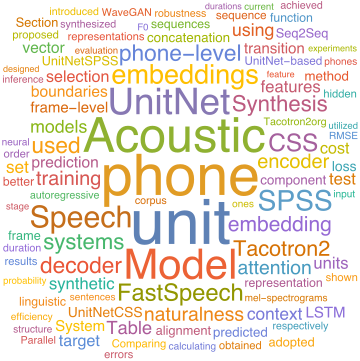
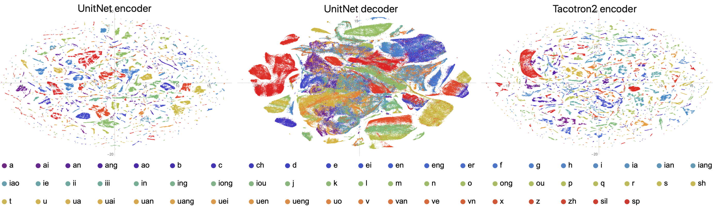

UnitNet: A Sequence-to-Sequence Acoustic Model for Concatenative Speech Synthesis
Paper: under review
Visualization: Github
Authors
- Xiao Zhou xiaozh@mail.ustc.edu.cn
- Zhen-Hua Ling zhling@ustc.edu.cn
- Li-Rong Dai lrdai@ustc.edu.cn
Abstract
This paper presents UnitNet, a sequence-to-sequence (Seq2Seq) acoustic model for concatenative speech synthesis. Comparing with the Tacotron2 model for Seq2Seq speech synthesis, UnitNet utilizes the phone boundaries of training data and its decoder contains autoregressive structures at both phone and frame levels. This hierarchical architecture can not only extract embedding vectors for representing phone-sized units in the corpus but also measure the dependency among consecutive units, which makes the UnitNet model capable of guiding the selection of phone-sized units for concatenative speech synthesis. A byproduct of this model is that it can also be applied to statistical parametric speech synthesis (SPSS) and improve the robustness of Seq2Seq acoustic feature prediction since it adopts interpretable transition probability prediction rather than attention mechanism for frame-level alignment. Experimental results show that our UnitNet-based concatenative speech synthesis method not only outperforms the unit selection methods using hidden Markov models and Tacotron-based unit embeddings, but also achieves better naturalness and faster inference speed than the SPSS method using FastSpeech and Parallel WaveGAN. Besides, the UnitNet-based SPSS method makes fewer synthesis errors than Tacotron2 and FastSpeech without naturalness degradation.
Audio Samples
Naturalness (in-domain)
| Text | 繁荣农村经济，增加农民收入的重要途径，是内陆省缩小与沿海地区的差距，实现奔小康 | 风波亭一场，岳飞由岳云张宪搀扶着，步履艰难，踉踉跄跄，唱腔用的是高拨子 | 招聘公务员，一定要在核定的编制内，按照规定的职数和职位要求，选择合格人员 | 松柏生于山林，其始也，困于蓬蒿，厄于牛羊，而其终也，贯四时，阅千古而不改 | 接着是欧盟撩开扩大的帷幕，请出塞浦路斯、捷、匈、波，外加爱沙尼亚和斯洛文尼亚 |
|---|---|---|---|---|---|
| UnitNet_CSS | |||||
| Tacotron2_CSS | |||||
| HMM_CSS | |||||
| UnitNet_SPSS +WaveNet |
|||||
| Tacotron2_org +WaveNet |
|||||
| Tacotron2_SMA +WaveNet |
|||||
| FastSpeech +WaveNet |
|||||
| FastSpeech +Parallel WaveGAN |
Robustness (out-of-domain, Griffin-Lim)
Number Strings
| Text | 你有电话来至13866519022； 你有电话来至65301811； |
今天的股价是555.2222222。 | 啊啊啊啊，我怎么算错了呢？ 应该是22222.22222。 | 等于7812837912231231222 | 等于123743.2222 |
|---|---|---|---|---|---|
| Tacotron2_org | |||||
| Tacotron2_SMA | |||||
| FastSpeech | |||||
| UnitNet_SPSS |
Novels
| Text | 所以越是黎维娟盛赞陈孝正的时候， 郑微就越感到极度反感，并嗤之以鼻。 | 今天是农历己亥年，二月初七 |
|---|---|---|
| Tacotron2_org | Stop-token error |
Stop-token error |
| Tacotron2_SMA | ||
| FastSpeech | ||
| UnitNet_SPSS |
Classical Chinese Poetries
| Text | 茅屋为秋风所破歌，杜甫 八月秋高风怒号，卷我屋上三重茅， 茅飞渡江洒江郊，高者挂罥长林梢，下者飘转沉塘坳， 南村群童欺我老无力，忍能对面为盗贼， 公然抱茅入竹去，唇焦口燥呼不得，归来倚杖自叹息， 俄顷风定云墨色，秋天漠漠向昏黑， 布衾多年冷似铁，娇儿恶卧踏里裂， 床头屋漏无干处，雨脚如麻未断绝， 自经丧乱少睡眠，长夜沾湿何由彻， 安得广厦千万间，大庇天下寒士俱欢颜，风雨不动安如山， 呜呼，何时眼前突兀见此屋，吾庐独破受冻死亦足。 |
观刈麦，白居易 田家少闲月，五月人倍忙， 夜来南风起，小麦覆陇黄， 妇姑荷箪食，童稚携壶浆， 相随饷田去，丁壮在南冈， 足蒸暑土气，背灼炎天光， 力尽不知热，但惜夏日长， 复有贫妇人，抱子在其旁， 右手秉遗穗，左臂悬敝筐， 听其相顾言，闻者为悲伤， 家田输税尽，拾此充饥肠， 今我何功德，曾不事农桑， 吏禄三百石，岁晏有余粮， 念此私自愧，尽日不能忘。 |
|---|---|---|
| Tacotron2_org | Stop-token error |
Attention collapse & Stop-token error |
| Tacotron2_SMA | ||
| FastSpeech | More incorrect tones in the last half of the text |
More incorrect tones in the last half of the text |
| UnitNet_SPSS |
Visualization
t-SNE visualization of the phone-dependent distributions of the context unit vectors learnt by the UnitNet encoder (left), the acoustic unit vectors learnt by the UnitNet decoder (middle), and the unit vectors learnt by the Tacotron2 encoder (right).
The phone boundaries aligned by HMM (Top), UnitNet_SPSS (Middle) and Tacotron2_SMA (Bottom) for a test sentence.
The text corresponding to the speech was "作品正是由半阙残碑". We can see that HMM and UnitNet models obtained similar phone boundaries, which were consistent with the actual pronunciations of phones in speech waveforms.
Our Related Works
Learning and Modeling Unit Embeddings for Improving HMM-based Unit Selection Speech Synthesis
Learning and Modeling Unit Embeddings Using Deep Neural Networks for Unit-Selection-Based Mandarin Speech Synthesis
Extracting Unit Embeddings Using Sequence-To-Sequence Acoustic Models for Unit Selection Speech Synthesis
The USTC System for Blizzard Challenge 2018
The IIM System for Blizzard Challenge 2019